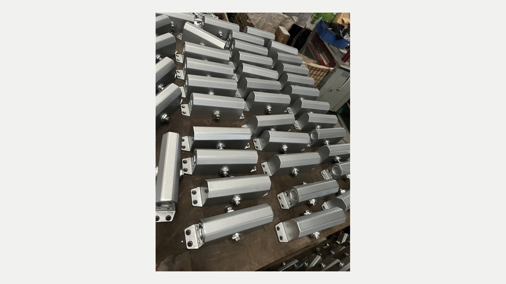

Real business-visit photograph, used as hardware context only. It does not verify a particular supplier, order or test result.
Katherine from Taotao Trading
A small metal component changes after you have compared quotations. Do you approve another sample from the nearby supplier, or stop and clarify the drawing first? This is the buyer decision behind my latest Jinli sourcing note.
Why proximity can help—and what it cannot decide
Jinli, in Gaoyao, Zhaoqing, has an established hardware supply network. An October 2026 report on the Guangdong Greater Bay Area portal describes its cluster and products such as hinges, door closers and floor springs. That is useful context for finding specialists. It is not evidence that any particular supplier can make your component.
Nearby suppliers can make visits and sample comparisons easier to coordinate. Whether a change is actually faster depends on tooling, material availability, subcontracting, the drawing and the approval process. I would not treat location as a guaranteed delivery date or a promise of lower total cost.
Request one revision record before paying for the next sample
Use this Taotao working checklist to put the proposed change into one record:
- Identity: part number, drawing revision, units and the assembly in which it will be used.
- Change: the dimensions, material or finish that differ from the previous sample; keep the unchanged requirements visible too.
- Acceptance: the dimensions to measure, fit or function to demonstrate, and who approves the result.
- Commercial scope: sample fee, tooling implications, quantity, packing and the supplier's confirmed timing for this revision.
- Responsibility: who makes the part, who performs outsourced work, and who coordinates the complete order.
Verify the drawing against an actual sample
Ask the supplier to return the drawing with the revision acknowledged. Compare the sample with that revision and record the measurement results. Where it is an assembly part, check it with the mating component rather than approving an isolated photograph.
For example, a hypothetical hinge with the right external appearance may still have the wrong hole spacing. A signed sample photo alone will not resolve that mismatch; the measurement and assembled fit need to answer the original requirement.
My corporate-credit background informs how I compare promises with available evidence. In sourcing, that means reviewing authorized supplier documents, sample details and responsibility for the next step—not accessing private banking information or guaranteeing future performance.
Red flags and limits
Pause when “same as before” replaces a revision number, when the quote omits the changed finish, or when nobody owns the final fit check. One successful sample does not demonstrate production consistency. Safety-related or regulated applications may need a qualified technical review beyond a sourcing visit.
Continue / Pause / Escalate
- Continue: the supplier acknowledges the revision, the sample checks are defined, and the fee and timing refer to that same scope.
- Pause: drawings, samples and quotations describe different versions.
- Escalate: the change affects safety, load-bearing performance or a regulated assembly and needs specialist approval.
Related product context: door and window hardware and door closers.
Send Taotao Trading a redacted drawing and the change you need checked through our inquiry page. Remove customer names, prices, banking details and personal contacts; share only drawings you are authorized to disclose.
Source: Guangdong Greater Bay Area portal, October 21, 2026. Local supplier checks and sample acceptance remain order-specific.